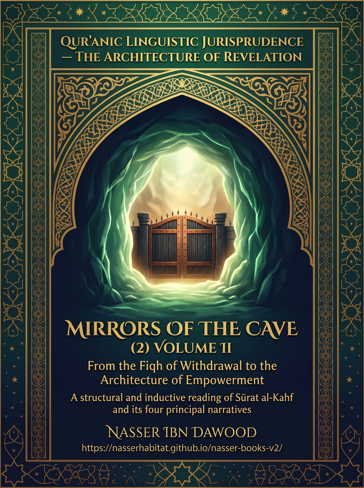

139. Mirrors of the Cave — Volume II: From the Fiqh of Withdrawal to the Architecture of Empowerment

A structural and inductive reading of Sūrat al-Kahf and its four principal narratives using Qur’anic linguistic jurisprudence, the Mathānī system, and QCROS, distinguishing textual evidence, counterevidence, and operational models.
Condensed conceptual adaptation; the Arabic work remains the primary source.
قراءة PDF داخل الموقع / Read the PDF on this website
جارٍ تجهيز القارئ… / Preparing the reader…
Book Summary, Table of Contents & Excerpt
QUR’ANIC LINGUISTIC JURISPRUDENCE / THE ARCHITECTURE OF REVELATION
MIRRORS
OF THE CAVE
VOLUME II
From the Fiqh of Withdrawal
to the Architecture of Empowerment
A structural and inductive reading of Sūrat al-Kahf and its four principal narratives
Nasser Ibn Dawood
2026 • Condensed conceptual English adaptation
Arabic source: assembled research manuscript R8 / RESEARCH OPEN
القرآن هو المدونة الحاكمة — والاجتهاد البشري قابل للمراجعة
I. The Global Knowledge Manifesto
Knowledge is a universal right. The author firmly believes that wisdom should not be locked behind paywalls or language barriers.
Global Access Policy: All books in this library are available for free in multiple digital formats (PDF, HTML, DOCX, TXT).
The Digital Library: As of early 2026, the collection hosts 236 volumes (118 in Arabic and 118 in English), fully optimized for AI-assisted research and digital archiving.
Official Platforms: Main Website: nasserhabitat.github.io/nasser-books/
GitHub: nasserhabitat/nasser-books
This manifesto is reproduced here as supplied by the author for this condensed edition.
II. Translator’s Note: The Bridge of Meaning
This English edition is a condensed conceptual adaptation. It is not a word-for-word translation, but rather an "extraction of essence." It presents the core philosophical framework in accessible English, omitting the exhaustive linguistic debates and classical references found in the original Arabic text.
For the academic researcher: The original Arabic version remains the primary source for comprehensive linguistic analysis, detailed exegesis (Tafsir), and the complete bibliography.
This adaptation also preserves the methodological status of the Arabic edition. A claim marked OPEN remains open; a CANDIDATE remains a candidate; a RESISTED or STRONGLY RESISTED claim is not revived through simplification; and a CLOSED result remains closed only within its declared scope. The aim is clarity without scientific inflation.
Key Qur’anic terms are sometimes retained in transliteration—such as nafs, tawaffī, barzakh, and baʿth—when a single English equivalent would prematurely narrow the field under study.
Editorial scope of this volume
This work condenses the four principal parts, the methodological foundation, the applied conclusion, and the active hypothesis register of the Arabic research manuscript entitled «مرايا الكهف (2) — من فقه الاعتزال إلى هندسة التمكين». Its source is an R8 compilation marked RESEARCH OPEN, with editorial quality control completed but human verification and a number of scientific tests still pending. The present adaptation does not independently settle those matters. It retains the author’s first-person scholarly voice where meaningful while making the material approachable to readers unfamiliar with the original terminology.
The Qur’an is the governing corpus. Commentaries, grammars, the author’s earlier books, and contemporary analogies can illuminate questions, but none of them independently proves a meaning absent from the Qur’anic passage. Qur’anic references are given by sūrah name and verse; short English formulations below are explanatory renderings for this adaptation, not a substitute for the Arabic text.
Contents
1. The question and the research covenant 2. The cave, refuge, youth, and steadfast hearts 3. Hearing, sleep, dream, and recumbence 4. The sun, the turning, and the two directions 5. Al-Raqīm, the threshold, and the dog 6. Time, the number 309, awakening, and disclosure 7. Four stories, four interrogations of human conduct 8. Money and the ethics of need 9. Moses, the taught servant, and the limits of knowledge 10. Dhū al-Qarnayn: capacity as public responsibility 11. The internal cave and the practical return to society 12. QCROS: the reader’s reproducible research workshop 13. The status register K-01 to K-15 14. Glossary, research limits, and concluding invitation
1. The Question and the Research Covenant
How can a believing community protect its guiding reference when subjected to coercion, and later contribute to a wider protection of other people, without letting withdrawal turn into paralysis or empowerment turn into domination? This is the governing question of Volume II. The sequence from the cave to the great barrier is offered as a reading architecture, not as a claim that one historical institution passed through all four narratives or that the sequence of stories itself records a compulsory social history.
The first volume of Mirrors of the Cave proposed an illuminating correspondence among four domains: faith confronted by persecution, wealth confronted by pride, knowledge confronted by the limits of understanding, and power confronted by the duty to protect. This second volume tests that attractive architecture against the wording of al-Kahf, relevant passages elsewhere in the Qur’an, alternative grammatical and exegetical readings, and counterevidence. The earlier volume supplies questions and hypotheses; its conclusions are not independent Qur’anic evidence for the present volume.
The method called fiqh al-lisān al-Qur’ānī (فقه اللسان القرآني, Qur’anic linguistic jurisprudence) begins with the words and relations of the text. The Mathānī system investigates correspondences, contrasts, and recurring structures at several scales, including linked narratives and exploratory pairs of letters. Such patterns can suggest hypotheses, but neither phonetic resemblance nor the proximity of two stories establishes lexical identity, historical continuity, causation, or divine intention in a particular correspondence. QCROS then subjects every claim to an explicit chain of observation, induction, objection, testing, and bounded decision.